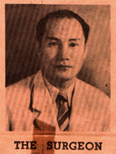

THE SURGEON
The plastic operation described was performed by Dr. Jaime E. Laico who, since 1940, has devoted himself to this branch of surgery. This case, the first of its type, would have taken less time to complete if such aids as penicillin and the sulfa drugs had been known then.
He was further handicapped by the coming of the war and had to perform the last stages of the operation under trying circumstances. Nonetheless, he had another case in 1942, a 12-year-old boy who sustained a shrapnel wound in the chest. This was followed by another, shortly after Liberation. Since then, he has been having a steady flow of patients.
A member of the Philippine College of Surgeons and presently one of the consulting surgeons of the PGH and an instructor of the department of surgery, U.P. College of Medicine, Dr. Laico is the first Filipino known to have attempted the practice of plastic surgery. He demonstrated a plastic operation on the nose at the PGH during the First Philippine Surgical Congress last December.
Following graduation at the U.P., the Laguna-born (Magdelena) surgeon was resident in surgery at the PGH for five years, served as director of Albay provincial hospital and later of the Los Banos infirmary. Dr. Laico has not been abroad, and learned plastic-surgery methods by painstaking and extensive research in the medical literature.